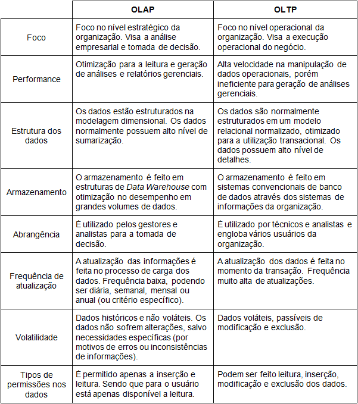
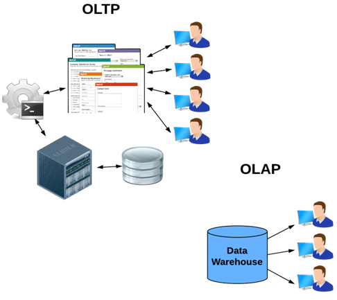
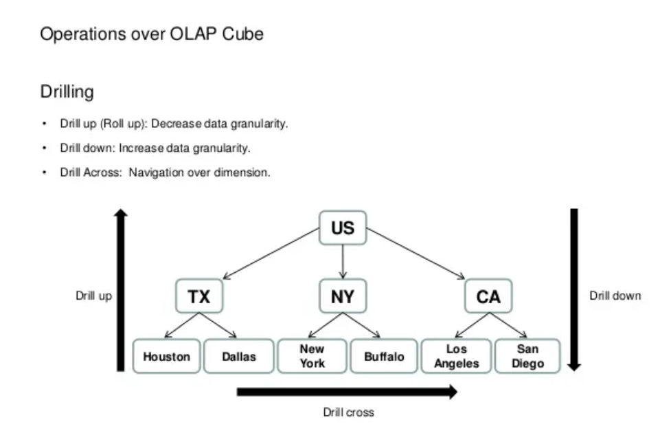

Conceitos de OLAP
Itens do Edital:
c) Análise de dados e informações: Conceitos de OLAP
Canaltech
O OLAP, do inglês “On-line Analytical Processing”, trata da capacidade de analisar grandes volumes de informações nas mais diversas perspectivas dentro de um Data Warehouse (DW). O OLAP também faz referência às ferramentas analíticas utilizadas no BI para a visualização das informações gerenciais e dá suporte para as funções de análises do negócio organizacional.
Os sistemas OLTP e OLAP se diferenciam em diversos outros aspectos. Vejamos:

Em resumo podemos dizer que a grande diferença está no fato de que um está direcionado ao funcionamento dentro do ambiente operacional (OLTP) e o outro com foco essencialmente gerencial (OLAP).

Brasil Escola
5.2. OLAP
Segundo Michel (2003), OLAP (On-Line Analytical Processing ou Processamento Analítico On-Line) é um sistema de informação multidimensional cuja tecnologia de construção permite aos analistas de negócios, gerentes e executivos analisar e visualizar dados corporativos de forma rápida, consistente e principalmente interativa, ou seja, é onde são extraídos e gerados os relatórios para os usuários. Na figura 8, mostra que o OLAP fornece informações aos usuários.
Figura 8: OLAP
Da mesma forma como o BI, O OLAP não pode ser definido, como uma ferramenta ou um processo, mas sim um conjunto dos mesmos, pois os elementos essenciais para a criação de um OLAP é sua aplicabilidade em diversas camadas da tecnologia, como armazenamento e linguagem de programação, THOMSEN, 2002, complementa dizendo que “[...]De modo geral, pode-se falar de conceitos OLAP, linguagens OLAP, camadas de produtos OLAP e produtos de OLAP completos[...]”.
O OLAP se difere do ETL, basicamente, pelo fato de ETL fazer a extração de dados diretamente de vários bancos, visando a sua organização e as soluções OLAP, extraem informações que foram geradas pelo ETL, se referindo a um conjunto de ferramentas voltadas para o acesso e análise ad-hoc de dados.
BILL INMON, 2002 conceitua ad-hoc como:
Consultas com acesso casual único e tratamento dos dados segundo parâmetros nunca antes utilizados, geralmente executados de forma iterativa e heurística. Isso tudo nada mais é do que o próprio usuário gerar consultas de acordo com suas necessidades de cruzar as informações de uma forma não vista e com métodos que o levem a descoberta daquilo que procura.”
Em BI, o OLAP pode se apresentar principalmente de duas formas, como MOLAP, que é mais indicado para Data Marts e ROLAP que é mais indicado para Data Warehouse. Nos Data Marts o método de armazenamento de dados OLAP é chamado de MOLAP, que usa a tecnologia MDDB (MultiDimensional Database), isto se deve pelo fato de que os DM são mais específicos e a análise será mais limitada e com pouco detalhamento. Nos DW, o método é o ROLAP, que utiliza a tecnologia (Relational DataBase Management System), que possibilita um uso maior de funções e uma análise com mais confiabilidade na grande gama de informações que o DW possui.
Para “navegar” nas dimensões do “cubo” OLAP, emprega-se o uso de operadores dimensionais, que tem papeis distintos, podendo ser para aumentar e diminuir a granulidade, que é o nível de detalhamento a ser visualizado, ou então para ordenar e classificar as informações, na seção 4.2.1 algumas operações são demonstradas.
5.3. Operações
Uma das características mais importantes das ferramentas OLAP é a possibilidade de realizar algumas operações no decorrer da implementação, que nos fornece total controle das informações a serem exibidas e ordenadas. Existem variados tipos de comandos, mas comumente no BI utiliza-se algumas principais e são elas: Drill Across, Drill Up, Drill Down e Drill-Through.
Figura 9: Operações

5.3.1. Drill Across
É um comando para pular de um nível intermediário dentro de uma dimensão para outra dimensão. É necessário a utilização de duas tabelas fatos e essas tabelas tem que compartilhar a mesma dimensão intermediária. Segundo Kimball (2002), “trata-se de uma operação sobre dois cubos. Os dados nos dois cubos são combinados nas dimensões comuns aos mesmos”. Além de “pular” entre as dimensões, também é possível compara-las, por exemplo, é possível traçar um comparativo entre duas dimensões, como o valor total de vendas, pelo numero de um determinado produto vendido, sendo necessário elas apenas compartilharem alguma dimensão. Barbieri, 2001 completa dizendo que “[...] embora correlacionadas, estão em estruturas separadas, porém unidas por algumas dimensões coerentes”.
5.3.2. Drill Up e Drill Down
O Drill-up é o aumento na hierarquia de uma dimensão, por exemplo, imagina uma dimensão “Tempo” onde estão organizadas as informações em dia, mês, semestre e ano, vamos supor que queiramos ir, do dia 10 para o mês de março, essas operações não vão de um cubo a outro, mas sim na mesma dimensão, aumentando assim a granularidade do DW e diminui o nível de detalhamento.
Já o Drill Down é o contrário de Drill UP, é a descida na hierarquia de uma dimensão, indo de um mês para um dia diminuindo a granularidade e aumentando o nível de detalhe.
5.3.3. Drill Through
Possui o funcionamento parecido com o Drill Down, porém, tem como característica a possibilidade buscar os dados, ou informações, fora da estrutura principal. Por exemplo, após alcançar o nível máximo de detalhe em uma tabela fato, tem necessidade de se obter mais detalhe sobre determinada célula, como a nota fiscal, por exemplo, com o Drill Through é possível acessar o arquivo de origem dessa informação, diminuindo a granularidade, aumentando o nível de detalhe e saindo da estrutura principal do DW ou de um Data Mart.